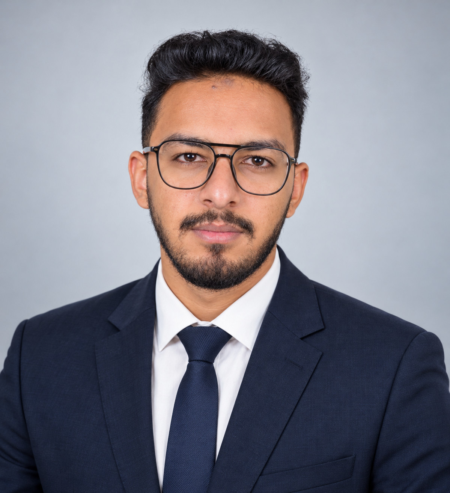

Customer care
Listen carefully, clarify the request and keep the interaction respectful.
I’m Mohamed Gamal, a BBA graduate in Finance and Investment with experience in banking customer service and a hands-on education platform project. I bring care for customers together with a practical, detail-focused approach to information and operations.
Open to customer support, vendor operations, banking operations, finance and data-focused opportunities.

My work has taken me from customer conversations in banking to organizing a large, information-rich platform. In both, clear communication and dependable follow-through matter.
At CIB, I supported customers with enquiries and service requests across banking products, following established procedures and documenting interactions carefully.
Alongside that, I built Masterix as an independent project: a platform that brings postgraduate programmes, universities and study destinations into one searchable experience. The platform is live and continues to evolve.
Listen carefully, clarify the request and keep the interaction respectful.
Organize information so it is clear, consistent and easier to act on.
Track open requests and follow defined steps through to resolution.
Masterix is my ongoing product and data project, built to help students explore postgraduate study options across countries and universities.
I started Masterix in March 2026 to make postgraduate programme information easier to discover and compare. I have been gathering and structuring programme and university data while continuing to improve the live platform.
Experience across banking support, financial-market research and an independent digital product.
Personal activity; not employment with a financial institution.
A focused set of strengths built through customer support, banking workflows, independent analysis and project work.
Business education with a specialization in finance and investment.
Finance and Investment · English section · Misr University for Science and Technology, Egypt